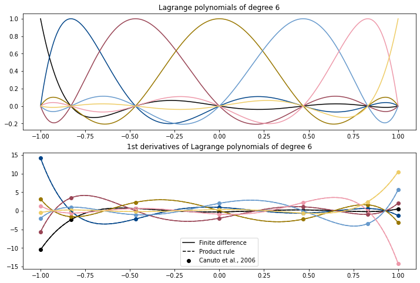

Problem 7.19#
The lagrange polynomials of degree \(n\) are described by their control points \(\xi_i\) , in this case GLL points, as
\[\begin{equation*}
\ell_i^n (\xi) = \prod_{\substack{j=0\\j \neq i}}^{n} \frac{\xi - \xi_j}{\xi_i - \xi_j} \quad.
\end{equation*}\]
Using the product rule the derivative is then
\[\begin{equation*}
\ell'{}^n_i(\xi) = \sum_{\substack{j=0\\j \neq i}}^{n} \left[ \frac{1}{\xi_i - \xi_j} \prod_{\substack{m=0\\m \neq (i,j)}}^{n} \frac{\xi - \xi_m}{\xi_i - \xi_m} \right] \quad.
\end{equation*}\]
An alternative formula for the derivative at the GLL points is given in Canuto et al 2006, Eqn. 2.3.28 in terms of Legendre polynomials of degree \(n\), \(P_n\):
\[\begin{equation*}
\ell_i'(\xi_j) =
\begin{cases}
\frac{P_n(\xi_i)}{P_n(\xi_j)(\xi_i - \xi_j)} \:, & i \ne j \\
-\frac{n}{4}(n+1) \:, & i = j = 0 \\
\frac{n}{4}(n+1) \:, & i = j = n \\
0 \:, & \text{otherwise}
\end{cases}
\end{equation*}\]
To evaluate the function at GLL points specifically, we will need a function to compute the GLL points for a specific \(n\) value. This function, copied from Problem 7.17 is in the cell below.
Show code cell source
import scipy.special as ss
import numpy as np
from copy import copy
import matplotlib.pyplot as plt
def gll(N, Nsegs=100):
# This function is the solution to 7.17.
# It is not the most efficient way to compute GLL points,
# but it works!
nroots = n + 1 # Number of roots
roots = np.zeros(nroots) # Array to hold all the roots
leg_n = ss.legendre(n) # P_n
leg_n_1 = ss.legendre(n-1) # P_{n-1}
def compute_functional(xi, n, lnm1, ln):
return n * (lnm1(xi) - xi * ln(xi))
# End points
roots[0] = -1
roots[-1] = 1
nrts_found = 2
if nroots > 3:
xi_end = 0.99999
if n%2==0:
xi_start = 0.00001
nrts_found += 1
else:
xi_start = 0.0
segments = np.linspace(xi_start, xi_end, Nsegs)
fseg = compute_functional(segments, n, leg_n_1, leg_n)
# Index in the 'roots' array to store the root
idx = int(nroots / 2) + nroots%2
# Loop through each segment and test if root lies within
for iseg in range(Nsegs-1):
if fseg[iseg] == 0:
# Root found exactly here
error = 0
nrts_found += 1
elif fseg[iseg+1] == 0:
# Root found exactly here
error = 0
nrts_found += 1
elif fseg[iseg] * fseg[iseg+1] < 0:
# There is a change in sign between the two values:
# Start with the current edge xi positions of the 'segment'
a = segments[iseg]
b = segments[iseg+1]
error = 999
while np.abs(error) > 1e-9:
grad = compute_functional(b, n, leg_n_1, leg_n) \
- compute_functional(a, n, leg_n_1, leg_n)
this_root = a + (b-a)/2
error = compute_functional(this_root, n, leg_n_1, leg_n)
if error !=0:
if grad*error > 0:
b = copy(this_root)
else:
a = copy(this_root)
roots[idx] = this_root
idx += 1
nrts_found+=2
for irt in range(1, int(n/2) + n%2):
i1 = int(nroots/2) -irt
i2 = int(nroots/2) +irt - n%2
roots[i1] = -roots[i2]
return roots
def lagrange(N, a, x, GLL):
# Computes a'th Lagrange polynomial of degree N at points x
# using control points specified in GLL array
poly = 1
for j in range(0, N+1):
if j != a:
poly = poly * ((x - GLL[j]) / (GLL[a] - GLL[j]))
return poly
/usr/local/Caskroom/miniconda/base/lib/python3.8/site-packages/scipy/__init__.py:146: UserWarning: A NumPy version >=1.16.5 and <1.23.0 is required for this version of SciPy (detected version 1.24.3
warnings.warn(f"A NumPy version >={np_minversion} and <{np_maxversion}"
Now let us compute the derivatives using this product rule, and compare it against a finite-difference approach and the formula by Canuto et al 2006, to ensure consistency.
# Compute the Lagrange polynomials for n
n = 6
# Compute the n+1 GLL points
gllpts = gll(n)
# We will plot the Lagrange polynomials and their derivatives
fig, ax = plt.subplots(2, figsize=(12,8))
# Define domain
x = np.linspace(-1, 1, 1000)
# collect objects for legend
leglines = []
# plot colours: Paul Tol's medium contrast scheme
clrs = ['k', '#004488', "#994455", '#997700',
'#6699CC', '#EE99AA', '#EECC66' ]
# Loop over the n+1 polynomials
for i in range(n+1):
lag = lagrange(n, i, x, gllpts)
# Plot lagrange polynomials as sanity check
ax[0].plot(x, lag, color=clrs[i])
# Compute the derivative as a finite difference
fd = (lag[2:] - lag[:-2])/(x[2]-x[0])
fd, = ax[1].plot(x[1:-1], fd, color=clrs[i])
if i ==0:
leglines.append(fd)
# Compute the derivative with Product rule formula
sum = x*0
for j in range(n+1):
if j!=i:
prod = 1 + np.zeros(len(x))
for m in range(n+1):
if m != i and m != j:
prod *= (x - gllpts[m])/(gllpts[i] - gllpts[m])
sum += (1/(gllpts[i] - gllpts[j])) * prod
# Plot product rule version
prodr, = ax[1].plot(x, sum, '--', color=clrs[i])
if i ==0:
leglines.append(prodr)
# Computing specifically at GLL points:
# Using method in Canuto et al 2006
# Loop over polynomials
for i in range(n+1):
# Loop over GLL points
derivs = np.zeros(n+1)
leg_n = ss.legendre(n)
for j in range(n+1):
if i == 0 and j == 0:
derivs[j] = -(n+1)*n/4
elif i == n and j == n:
derivs[j] = (n+1)*n/4
elif i != j:
derivs[j] = leg_n(gllpts[j]) / ( leg_n(gllpts[i]) * (gllpts[j]-gllpts[i]) )
else:
derivs[j] = 0
# Plot
canuto = ax[1].scatter(gllpts, derivs, marker='o', c=clrs[i])
if i ==0:
leglines.append(canuto)
# Cosmetics
ax[0].set_title(f'Lagrange polynomials of degree {n}');
ax[1].set_title(f'1st derivatives of Lagrange polynomials of degree {n}');
ax[1].legend(leglines, ['Finite difference', 'Product rule', 'Canuto et al., 2006']);
